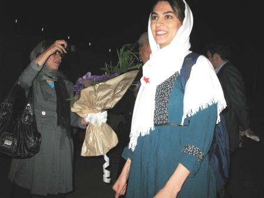

|
|
َشیوا نظرآهاری آزاد شد
چهار شنبه1 مهر 1388
تغییر برای برابری: شیوا نظرآهاری فعال حقوق بشر و حقوق زنان و دانشجوی ستاره دار شامگاه امشب اول مهرماه از زندان اوین آزاد شد.
این فعال حقوق بشر با تودیع وثیقه ای که از پانصد میلیون تومان به دویست میلیون تومان کاهش یافته بود ساعاتی پیش پس از بیش از چهار ساعت انتظار تعدادی از فعالان جنبش زنان دانشجویی، حقوق بشر و اعضای کمیته گزارشگران حقوق بشر و اعضای خانواده اش آزاد شد.

گفتنی است بازداشت این عضو کمیته گزارشگران حقوق بشر دو روز پس از برگزاری انتخابات ریاست جمهوری توسط نیروهای امنیتی در محل کارش صورت گرفت و ماموران ضمن تفتیش منزل او وسایل شخصی اش را ضبط کردند. این بازداشت که بیش از سه ماه در سلول های انفرادی و بند عمومی 209 زندان اوین ادامه داشت با بازجویی های فشرده و طولانی مدت همراه بود و او تا مدت ها حتا از حق ملاقات و امکان تماس تلفنی با خانواده اش نیز محروم بود.
شیوا نظر آهاری عضو جمعیت دفاع از کودکان کار و خیابان، شورای دفاع از حق تحصیل و کمپین یک میلیون امضا نیز هست.
تغییر برای برابری آزادی این فعال حقوق بشر و عضو کمپین را به شیوا و خانواده ی او و فعالان مدنی و حقوق بشری تبریک می گوید.